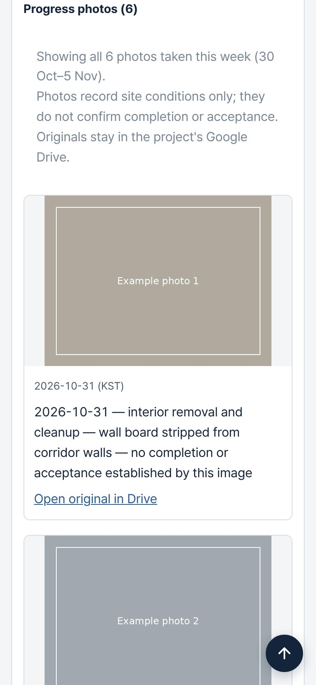

Goal
Korean subcontractors on U.S. military construction work in two languages, across email, chat, spreadsheets and shared drives. Every weekly report and status sheet was rebuilt by hand, so outputs went stale on their own. Gyeoldesk gives the whole team one current picture of each task order, in Korean or English, on a phone or a computer.
The design rule: facts flow one way, from the source records to the outputs. Nobody edits an output by hand.
System
- Sources: the company's Google Drive (weekly report items, project files, photo manifests) and its project-controls tracker (submittal register, contacts, roster).
- Collector: Apps Script in the company's own Google account. The weekly report syncs every 15 minutes; records, contacts and photos sync every hour. Every request is signed.
- Database: Supabase Postgres in Seoul, with row-level security on every table. One company can never read another's rows.
- Site: a static app on GitHub Pages, with one subdomain per company. Sign-in uses an email and a 6-digit code.
- Releases: a preview site first. A production release happens only after the owner approves it in writing.
3 November: what shipped
That day saw three production releases, two database migrations, one new server function and 28 automated tests. Each release went to preview first and was approved before going live.
| Update | What a user sees |
|---|---|
| Contacts directory | Who to contact on each project, who gets each email, which address to send from, and what each person can approve. Mobile numbers are visible to admins only. |
| Progress photos | Photos a named reviewer approved for the week, shown on the project card to signed-in staff. Originals stay in private Drive. |
| Photo status line | "Showing 14 of 22 photos taken this week (30 Oct–5 Nov)", why the rest aren't shown, and a note that a photo does not confirm completion. |
| Card navigation | Cards open at the top. "Back to the board" returns to where you were. A ↑ button appears once you scroll. |
| Standard labels | 13 labels changed to standard project and software terms. A menu item that did nothing was removed. |
| Parser fix | Photo tables in weekly reports had been read as payment rows. They no longer are. |
Feedback from users
Design follows what real users report. Every build log entry records who gave the feedback (by role) and what changed because of it.
| From | Feedback | What changed |
|---|---|---|
| Owner, on a phone | Cards opened part-way down the page, with no quick way back to the top. | Cards open at the top, the board remembers your place, and a ↑ button appears. Shipped the same day. |
| Owner | Photos stay in private Drive. Wording should follow industry terms. | The private photo path, photo-log status wording and 13 label changes. Shipped the same day. |
| Office team member, first pilot reviewer | The board is too long. She wants a progress bar by stage, sorting by start date or prime contractor, and no hand-kept stage list. She sent a mockup. | A stage dashboard with counts, a one-line list and a per-project panel, built from existing dates. On preview for review. |
Photos, privately
The owner's direction was simple: photos stay in the company's private Google Drive. The site's code repositories are public, so nothing is copied to them, and no share links are created.
- A restricted manifest records each photo: its capture date and the evidence for that date, Korean and English captions, verification, and the reviewer's approval in their own words.
- Only verified, approved, selected photos dated inside the reporting week are released. Everything else contributes counts only.
- A members-only function checks access through row-level security. It then asks the collector's relay, with a signed request valid for 5 minutes, for Drive's resized thumbnail. The thumbnail is re-encoded, so it carries no camera metadata or location.

Decisions
Private Drive instead of public hosting
- Problem
- The first gallery design copied approved photos into the site's assets, which live in public repositories.
- Options
- Public assets; a private storage bucket; serve from Drive through a signed relay.
- Decision
- Serve from Drive. A photo has to be on an allow-list of released files, and each request needs a signed, time-limited token.
- Trade-off
- Images take a few seconds longer to load, and the relay runs within Apps Script quotas, so the card loads 3 photos at a time.
Verification is not approval
- Problem
- A correctly dated, correctly captioned photo can still show people, vehicle plates or site details that shouldn't spread.
- Decision
- Technical verification and release are separate steps. A named reviewer releases each photo, and the approval text is recorded word for word. Each audience (internal, prime contractor, public) needs its own approval.
- Evidence
- An approval arrived using placeholder IDs copied from an example. The system asked which photos were meant, and did not guess.
Counts that add up
- Problem
- The first status line counted some photos twice, as both "historical" and "date unconfirmed".
- Decision
- This week's photos are split into shown and not shown. Everything else on record is counted once, as other files.
Lessons
- Parallel AI assistants need a re-sync step. Two assistants pushed to the same branch within an hour. Each build now starts from the latest branch, and the other assistant's commits are reviewed before promotion. That review kept a correct database-filter fix.
- Exact approval words protect production. A plain "I approve" didn't unlock a live deploy until the owner confirmed it was meant for production.
- Examples become inputs. Placeholder IDs in an instruction were copied straight into a real approval.
- Verify from the other side. When the build machine couldn't reach an endpoint, database rows, function logs and readback of the live files confirmed each step.
Working with AI
- My part: requirements, the rules on privacy and release, every approval, and the call on what goes live.
- The AI's part: implementing each change with tests, publishing to preview, and logging versions and decisions in a shared register and a DevOps log.
- The controls: no keys or secrets in any repository, commit or log; preview before production; a written approval for every production step.
What's next
- Rolling out to the rest of the first company's team.
- Generating the weekly outputs automatically when a week is finalized.
- Projects, Bids & proposals and Warranties pages.
Last updated November 3, 2026. The full day-by-day record is in the public build log. Client project details, people's names and site photos are left out on purpose.